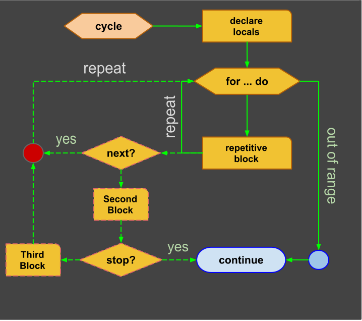
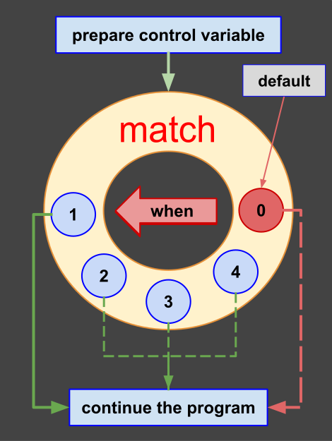
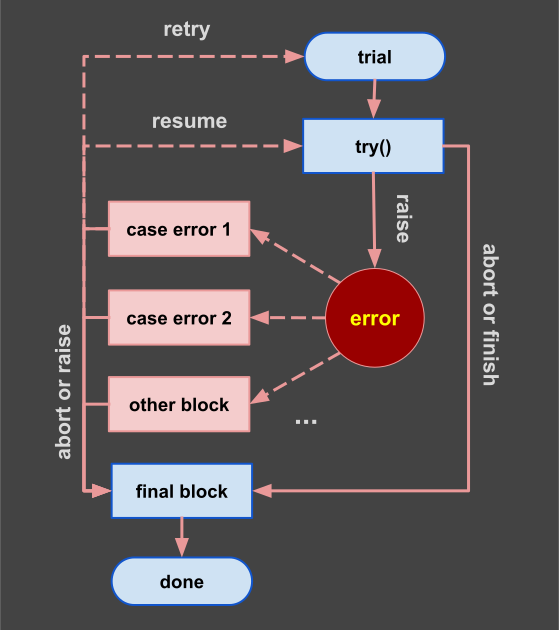

Control Flow
Page bookmarks
These are all block statements in Bee language:
| Name | Description |
|---|---|
| start | named block |
| with | anonymous block |
| if-else | decision fork |
| ladder | decision ladder |
| cycle | repetitive unconditional block |
| for | repetitive block with local scope |
| match | enumerable symbol selector |
| trial | exception handler block |
Start
We use ocasionaly a block of code that has a local scope by using "start" keyword follow by a label. The label is optional and can be numeric or alphanumeric.
Syntax:
In this example we use "start" to create a local scope and a new variable (a) inside this scope. Then we use nested do statement and we end with "done" keyword follow by optional label.
start [label]:
** local variables
...
do
** executable block
...
done [label];
with
Start a "qualifier suppression block". This is a block that eliminate the need for qualifiers into an anonymous local scope. You can use "with" to suppress module names or aliases.
Example:
For this example first we create a simple module:
#define test_module
rule .inc(x:0) => (r: 0):
let r := x + 1;
return;
We load a secondary module and use a qualifier for it:
#using qualifier suppressor
use lib_folder/test_module as test;
rule main:
** define locals
new x := 2;
with test do
** call external routine .test
expect x == 3;
print inc(x);
done;
return;
Notes:
- before "with" you can use "start"
- you can use "with" for any "do" block
- any "do" block has a local scope
if-else
Using "if" and "do" keywords you can create a task that is executed or not depending of a condition. When the condition is false the block statement is ignored and next statement is executed. This statement is sometimes called fork.
Pattern 1: conditional branch
Using "if" keyword we can create a conditional branch:
# decision
if condition do
** statements
...
done;
Example:
In this example we use "begin" to create a local scope and a new variable (a) inside this scope. Then we use nested anonymous if statement.
# fragment
start test:
new a := random();
if a < 0 do
print ("|a| =", a);
else
print ("|a| =", -a);
done test;
Pattern 2: two-ways conditional
By using "else" keyword we can split the conditional branch into two branches:

decision diagram
# decision with two branches
if condition do
** true branch
...
else
** false branch
...
done;
Decision Ladder
By using keywords "if" and "else" you can create a cascade of decisions called "decision ladder" that has several conditional branches plus one optional branch that is executed when no other condition is fulfilled.

decision ladder
Example:
#decision ladder
start test:
** local scope
new a ∈ Z; -- control variable
read("a = ", a); -- expressions in declaration area
if a = 0 do -- first decision
print "a = 0";
else if a > 0 do -- second decision
print "a > 0";
else if a < 0 do -- third decision
print "a < 1";
else
** default block
print "unexpected:" + a;
done test;
cycle
You can use "cycle" to start a repetitive block. This keyword is used before local declaration and can create a labeled cycle. "do" will repeat all statements in the block until a condition ends the cycle. If no condition exists, the cycle is infinite.
Pattern 1: Infinite cycle
Next example show a repetitive "do" block that runs forever. It is not very practical but will be terminated when reaches maxim limit of iteration establish by $iteration variable.
infinite cycle
#infinite cycle
cycle [label]:
** local variables
do
** repetitive block
...
repeat [label];
Pattern 2: stop condition
Next block will execute multiple times until stop condition is true.
stop condition
#conditional run cycle
cycle:
** local variables
...
do
** repetitive block
...
[redo if condition1];
...
[stop if condition2];
...
repeat [if condition3];
Pattern 3: while condition
Keyword "while" can be used to evaluate a condition and start or continue a repetitive block. The number of repetitions is controlled by condition. If the start condition is not fulfilled the else block is executed. When "else" block is ending the cycle normally stops unless "redo" is used to restart the cycle.
start-condition cycle
#conditional start cycle
cycle [label]:
** define local variables
...
while start_condition do
** first repetitive block
...
[stop if condition]; -- break the cycle
...
[redo if condition]; -- restart the cycle
...
then
** non repetitive block
...
repeat [label];
Note 1: The else block runs one single time, that is when the condition evaluate to false. Otherwise if we repeat the cycle for "else" block we can end-up with infinite loop that is absurd.
Note 2: Keyword: "stop" is similar to "break" in Java and "redo" similar to "continue". These are optional interruption statements. Occasional you can use these statements to improve code performance or readability.
Pattern 3: nested cycles
Next syntax pattern show how to use a nested cycles with labels.
# nested blocks
cycle 42:
** local variables
...
do
...
cycle 10: do
...
redo 42 if condition1; -- restart block 42
...
stop 42 if condition2; -- exit block 42
...
repeat if condition3;
...
repeat 42;
...
Notes:
- Block names can be numeric and are optional,
- Declaration region after ":" is optional,
- Keywords "redo" and "stop" can be used with labels,
- Flat code is better. Do not nest too deep.
for
You can start an iterative cycle by using keyword "for". This statement create a cycle that is controlled by a set of values. We use a control variable generated from a domain or visit elements of a collection.

for cycle
#iterative cycle
cycle [label]:
** local variables
new i ∈ N;
for ∀ i ∈ (min..max:rate) do
** repetitive block
...
[next if condition]; -- fast forward
...
[stop if condition]; -- early transfer
...
[then]
** non repetitive block
...
repeat [label];
Notes:
- Cycle blocks can be named using a label identifier;
- If used, label enable creation of local variables;
- Control variable: "i" is in local scope, even if label is missing;
- Interruptions (next, stop) are optional and most of the time not needed;/li>
- By using "next", control variable is incremented automatically;
- Only one iterable variable is permitted in given scope;
Example 1:
#range iteration with rate 1
cycle:
new i ∈ N;
for ∀ i ∈ (1..10) do
if i % 2 = 0 do
next; -- iterate
else
write i; -- odd numbers
done;
write ',' if (i < 10);
repeat;
1,3,5,7,9
Example 2:
Ratio: Using domain ratio the example above can be simplified:
#range iteration with rate 2
cycle:
new i ∈ N;
for ∀ i ∈ (1..9:2) do
write(i); -- odd numbers
write(',') if (i < 9);
repeat;
print;
Notes:
- Don''t use "make" inside a repetitive block,
- Don''t use "set" inside a repetitive block,
- Bee has a limit on how many repetitions before give up: $max_iterations.
match
This is a multi-path selector similar to so called jump table. A selector is based on a series of blocks. One or more blocks can be executed depending on specific value. In other languages a selector is created using "switch" statement. In Bee we use "match" statement instead.
A match has two variants: "all" or "one". If used, ALL will evaluate all values it may execute multiple blocks. If "one" is used, only first block that match value will be executed!

Match Diagram
Pattern:
#enumerable selector
type Selector: {v1,v2,v3,v4} <: E;
rule main:
new select := Selector.random()
match select [all] | [one]:
** declare locals
...
when v1 do
** first path
...
when v1, v2 do
** second path
...
other
** v3 or v4 found
...
done;
return;
trial
The trial is by far the most complex statement of Bee language. A trial block is used to handle a process that can have multiple steps that can pass or fail. It has a default block, several try blocks and multiple case blocks. Each case can resolve one error or several errors.

Trial Diagram
Notes:
- Trial and error is a fundamental method used for problem solving,
- It consist of repeated attempts until a solution is found,
- One try block can pass or fail but trial continue to next try,
- Trial can be terminated early by an interruption statement.
Keywords:
Next keywords are used to create a full trial block:
for cycle
#iterative cycle
cycle [label]:
** local variables
new i ∈ N;
for ∀ i ∈ (min..max:rate) do
** repetitive block
...
[next if condition]; -- fast forward
...
[stop if condition]; -- early transfer
...
[then]
** non repetitive block
...
repeat [label];
#range iteration with rate 1
cycle:
new i ∈ N;
for ∀ i ∈ (1..10) do
if i % 2 = 0 do
next; -- iterate
else
write i; -- odd numbers
done;
write ',' if (i < 10);
repeat;
#range iteration with rate 2
cycle:
new i ∈ N;
for ∀ i ∈ (1..9:2) do
write(i); -- odd numbers
write(',') if (i < 9);
repeat;
print;
Match Diagram
#enumerable selector
type Selector: {v1,v2,v3,v4} <: E;
rule main:
new select := Selector.random()
match select [all] | [one]:
** declare locals
...
when v1 do
** first path
...
when v1, v2 do
** second path
...
other
** v3 or v4 found
...
done;
return;
Trial Diagram
| word | description |
|---|---|
| trial | start a process that may fail |
| try | start a step in the process |
| case | catch errors with specific code or code range |
| other | catch all other errors not fixed by a patch |
| final | finalization region, executed before trial end |
Pattern:
#complex trial with many cases
trial [label]:
** initial or default statements
....
** preconditions: create recoverable error
expect condition else "message";
...
try [code1]: -- description
...
** jump to next try (no error)
pass if condition;
...
** record error, and jump to next try
fail {code, message} if condition;
...
** create error, and jump to cases
raise {code, message} if condition;
...
try [code2]: -- description
...
** skip the rest (no error) and jump to final
pass if condition;
** optional create error and jump to final
fail {code, message} if condition;
...
** create error and jump to cases
raise {code, message} if condition;
...
case $error.code = code do
** handler1
...
resume; -- continue witj next try
case $error.code ∈ (code1,code2) do
** handler2
...
retry; -- repeat trial from beginning
miss
** cover all other errors
...
raise; -- propagate last error
final
** finalization statement (executed before leaving)
print "final error:" + $error.code if $error.code > 0;
done [label];
Note:
- It is unusual to create nested trial blocks;
- A trial can contain many try blocks that are optional;
- A trisl can have many case blocks that are also optional;
- A trial can have one miss block and one final block;
- A trial can be repeated several times if errors are raised;
- A trial can stop execution of a rule with error if error raised;
Exceptions
Exceptions can be defined in your program using next notation. Exceptions and recoverable errors are using the same type. You can predefine exceptions/errors or issue them with one of: (expect, raise):
** define error
new exception := {code,"message"} ∈ X;
Recoverable errors can be issued using "raise" keyword.
** "raise" can create a customized error or message
raise exception if condition; -- create an error that is predefined
raise "message" if condition; -- create instant user error code: 200
raise {code,"message"} if condition; -- create instant custom error with code
Note: The standard module will define standard error objects as system constants. Code 100, 101, 102 are user errors, created by raise, expect or fail keywords.
try()
A trial can have several optional jobs. Each jon start with keyword try() that has 2 optional arguments: try(code, message). Every try can pass or fail with a code and a message.
You can use raise or abort inside a try() block. The raise will mark the try as failed and will record the code and message in the $trial report.
case
This region can catch an error and decide what to do next. Error can be catch by code or a list of codes. For each cases you can handle the errors using keywords: "abort","retry","resume" or "raise". If a case is not using any of these keywords, the next case is executed. If no case resolve the error, this error auto-propagate.
Transfer Statements
Next statements are transfer statements used in trial block:
| word | description |
|---|---|
| abort | stop the trial and transfer execution to final block |
| raise | intrerupt current job and create a recoverable error |
| fail | record an error and continue with next step |
| pass | skip current job and continue with next step |
| retry | exception handler, repeat the trial |
| resume | exception handler, jump to next try job |
other
This region is used for any other error that is not handled by case handlers. You can use any selector in this region to find an exceptions by code but you can also just report the error or log the error and stop the trial.
final
This region is executed just before trial is done, regardless of error status. Even if there is no error to propagate this region is still executed. This region is mandatory execute even if the trial is aborted.
In this region there is an oportunity to report all messages recorded in $trial object. You can use $trial.messages that is a hash-map created by the system automaticly.
In final block:
- you close files
- close connection to databases
- close locked resources
- create log, report $trial.messages
Example:
#simple trial block
trial:
new x ∈ Q;
new y ∈ Q;
try()
let x := 1/0;
final
print "x = " + x;
print $error.message if $error.code ≠ 0;
done;
raise:
In this example we use "raise" statement to create an error on purpose:
#define a custom error
trial:
new my_error:{200, "custom error"} <: Error;
try()
raise my_error; -- issue user error
case $error.code == 200 do
** we catch the the error and do something
print $error.message;
print $error.line;
miss
raise $error; -- propagate error
done;
Notes:
- Keywords {abort, raise, retry, resume} can resolve an error;
- In this case the error 200 is not handled and propagate;
- The other region will be executed for all errors;
retry:
By using "retry" you can repeat a trial several times until other ending conditions are encounter. You can issue "retry" from case blocks for specific errors.
#example of repeating trial
** try maximum 3 times
trial [name]:
new count ∈ (1..3);
new a ∈ (0..9);
try()
let count += 1;
read a;
if a < 0 do -- trigger patch
fail;
else if a < 9 do
write "correct";
else if a > 9 do
write "incorrect";
else
pass;
done;
case $out_of_range do
if count < 3 do
write "wrong try again:"
retry; -- try again the entire trial
else
write "wrong 3 times!";
fail $out_of_range;
done;
miss
write "mistrial: no case"
final
print "trial is resolved";
print $trial.messages;
done [name];
Note:
- When you retry the error code is erased,
- You can not use retry in final region,
- There may be several errors recorded in a $trial.messages,
- It is up to you to log the messages in the final block,
Read next: Rules